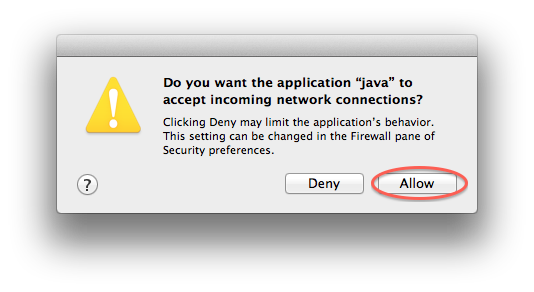

This document helps programmers using EPICS V4, to debug issues in their software, by listing potential user issues and their resolutions. This is not a buglist for EPICS V4 itself, it's a guide to help programmers who are using EPICS V4 find and resolve their own bugs.
This document is intended to be informative only. It will be updated on a best effort basis by the EPICS V4 working group.
Last modified: Wed Feb 22 15:55:49 CET 2012Nov 11, 2011 6:01:21 PM org.epics.ca.server.impl.remote.tcp.BlockingTCPAcceptor initialise INFO: Configured TCP port 5066 is unavailable, trying to assign it dynamically. Nov 11, 2011 6:01:21 PM org.epics.ca.server.impl.remote.tcp.BlockingTCPAcceptor initialise INFO: Using dynamically assigned TCP port 51659.CHECK: Whether you have an instance of the same server running elsewhere.
IOCXMLReader.convert terminating with IOException: /Users/greg/Development/epicsV4/workspace_hg/exampleJava/helloWorld/helloService.xml (No such file or directory)CHECK: Path to the xml file specifying the server may be wrong, check the
-record argument in your IOC server startup.
Exception in thread "main" java.lang.RuntimeException: connect error channel destroyed
at helloWorld.HelloClient$Client.connectResult(HelloClient.java:115)
at org.epics.pvService.rpc.ServiceClientFactory$ServiceClientImpl.waitConnect(ServiceClientFactory.java:98)
at helloWorld.HelloClient$Client.connect(HelloClient.java:79)
at helloWorld.HelloClient.main(HelloClient.java:44)
Can be caused by a variety of factors:
CHECK: no firewall is blocking the comms. Eg, Mac OS X firewall (OS 10.7)
if it running, will ask whether "Java" is allowed to accept incoming
connections. You may have said no in the past. If this the case the firewall should
be reporting into the System Log (open Console and look for messages like 11/11/2011 17:03:44.213 Firewall: Deny java data in from ::ffff:129.129.144.131:58978 to port 5067 proto=17
To fix this in OS X 10.7, go to System Preferences - Security and Privacy -
Firewall tab. Even if the Firewall is in Stop state, it's not really off
altogether. Go to "Advanced" and check there is no red dot next to Java in the
incoming connections list. It must be green:
Even if the Firewall is allowing connections nominally, you may be asked specifically if you want to to allow connections at the time that an EPICS V4 service is started. You must allow it, or your clients won't find your servers.

<database>
<record recordName = "myCoolEPICSService" extends = "org.epics.pvService.service">
<scalar name =
"factoryRPC">org.mylab.myCoolEPICSService.myCoolEPICSServiceFactory</scalar>
…
Note that our examples for Java tend to be in the default Java package, so the examples don't have
the package name. Yours probably will.
warning PVRecord.registerListener called but listener org.epics.ioc.pvCopy.PVCopyImpl$ThePVCopyImpl$CopyMonitor@d0e999 already registered ... In bad cases followed by: Feb 21, 2012 3:52:43 PM org.epics.ca.impl.remote.tcp.BlockingTCPTransport processSendQueue WARNING: Exception caught in thread processing send requests. java.lang.IllegalStateException: not queueElement returned by last call to getUsed at org.epics.pvData.misc.QueueCreate$QueueImpl.releaseUsed(QueueCreate.java:93) ... ... more stacktraceCHECK: Is your client creating one channelAccess and one channelProvider per channel (wrong) or per channel provider (right). I.e.:
Wrong:
for(int m=0;m<20;m++)
{
ChannelAccess channelAccess = ChannelAccessFactory.getChannelAccess();
ChannelProvider channelProvider = channelAccess.getProvider(providerName);
ConnectionListener cl = new ConnectionListener();
Channel channel = channelProvider.createChannel("counter_"+m, cl, ChannelProvider.PRIORITY_DEFAULT);
cl.setChannel(channel);
...
}
Right:
ChannelAccess channelAccess = ChannelAccessFactory.getChannelAccess();
ChannelProvider channelProvider = channelAccess.getProvider(providerName);
ConnectionListener cl = new ConnectionListener();
for(int m=0;m<20;m++)
{
Channel channel = channelProvider.createChannel("counter_"+m, cl, ChannelProvider.PRIORITY_DEFAULT);
cl.setChannel(channel);
...
}